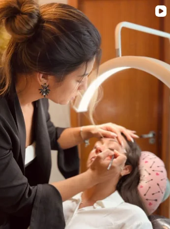
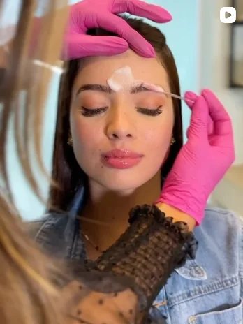
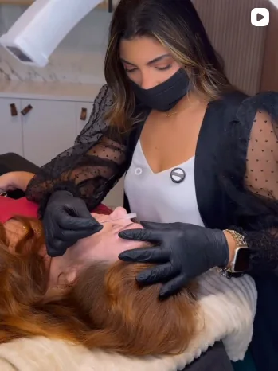
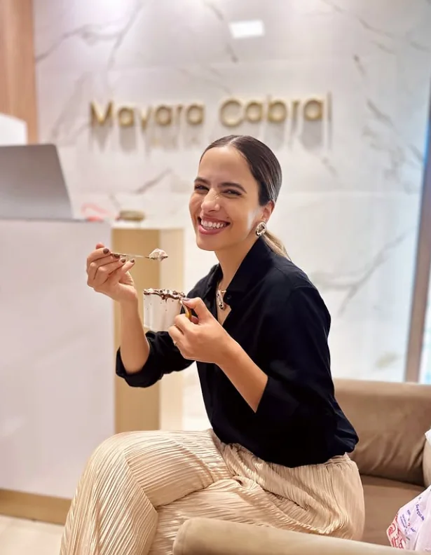
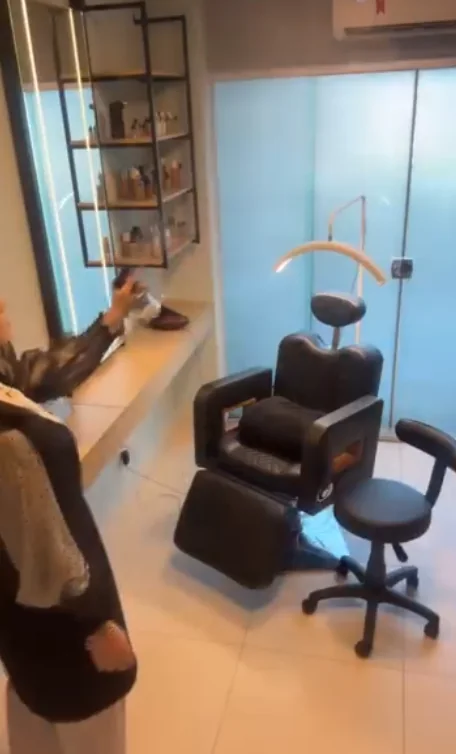
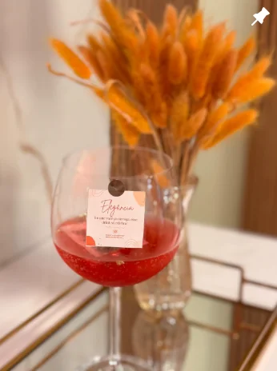

“Nunca fica no lugar certo.”
Fina demais, grossa demais, alta demais. Cada profissional faz um desenho diferente e nenhum parece combinar com o seu rosto.
Teixeira de Freitas · BA
Design personalizado para o formato do seu rosto, feito por quem já realizou mais de 3.000 procedimentos. Aqui o desenho nasce do seu rosto — não de um molde igual pra todo mundo.
Atendimento por WhatsApp · Seg a sex 13h–18h · Sáb 8h–14h
Se você já passou por isso
Sobrancelha não é detalhe. Ela comanda o seu olhar. Um milímetro a mais na altura errada endurece a expressão, envelhece o rosto e deixa você com uma cara que não é a sua — e você sai do salão sem saber explicar o que ficou estranho.
Fina demais, grossa demais, alta demais. Cada profissional faz um desenho diferente e nenhum parece combinar com o seu rosto.
As falhas te obrigam a uma maquiagem que você não escolheu fazer — virou obrigação, não vaidade.
Você quer micropigmentação, mas já viu resultado artificial demais, que se percebe de longe, e recuou.
Design que durou uma semana, coloração que saiu no primeiro banho, dinheiro no lixo.
Nada disso é frescura. É o seu rosto, é a primeira coisa que as pessoas olham em você — e é justo querer que ele te represente.
O método
“Cada sobrancelha que passa por aqui carrega uma história única, e o design personalizado existe exatamente pra isso: realçar a sua beleza, respeitando a sua essência.” Mayara Cabral
Antes de qualquer fio sair, o formato do seu rosto, a proporção e a sua expressão são avaliados. O desenho é decidido ali, com você — não copiado de referência da internet.
No Brows Repair, a análise é feita com tricoscópio para verificar se o folículo está ativo, dormente ou morto. Se estiver morto, a Mayara te diz na hora que o tratamento não vai funcionar. Aqui ninguém vende sessão que não traz resultado.
A nanopigmentação é feita fio a fio, de forma superficial na pele, respeitando o seu formato. O objetivo nunca é uma sobrancelha que chama atenção sozinha — é um olhar que parece seu.
Master certificada pela Beauty University, na clínica Natalia Beauty em São Paulo, e cursos em técnicas internacionais. Teixeira de Freitas com padrão de capital.



Resultados reais
Resultados reais de clientes da clínica. Cada resultado varia conforme o formato, a densidade e o histórico de cada pessoa.
Procedimentos
Do design de manutenção ao tratamento de reconstrução dos fios.
Curvatura e nutrição usando os seus próprios cílios — sem extensão, sem manutenção toda semana.
Para o dia a dia, para a festa e para o dia que não pode dar errado.
Para quem quer desfazer e recomeçar.
Quem faz
Mayara Cabral é especialista em sobrancelhas, penteados e maquiagem, com mais de 7 anos de profissão e mais de 3.000 procedimentos realizados. É Master certificada pela Beauty University, formação que fez na clínica Natalia Beauty, em São Paulo, e trouxe para a Bahia técnicas que aprendeu fora do país.
“Cuidar da beleza de alguém vai muito além da estética. É sobre lembrar aquela mulher da potência que ela é mesmo quando ela esquece. Eu vejo o que, às vezes, ela já não vê. E é uma honra ser esse lembrete.” Mayara Cabral
Quem já passou por aqui
“O melhor lugar, o melhor atendimento, a melhor experiência.”
@katiaoliportoEla é a melhor 🔥
@itsmepolysResultado maravilhoso 🤩
@cailaneferreira1Quanta perfeição!!!!!
@mayymoraisMuito lindaaaaa
@anadabe.fernandesPerfeita
@stefannedominguesQue maravilhosaaaaaa!! 🤩
@victoriajunker.fisioperfect 👏
@sblanesilvaMaravilhosaaaaaaa ❤️
@favieira2008Belíssima ✨
@fisiokarololiveiraComentários públicos no Instagram da clínica.
A diferença
O espaço
Um atendimento na Mayara Cabral Beauty Clinic não é uma passada rápida. É um horário reservado só pra você, num espaço pensado pra ser confortável do momento em que você senta até a hora em que se olha no espelho.
“É sobre entregar presença, escuta, amor em forma de cuidado. Cada atendimento carrega meu toque, minha alma, meu propósito.” Mayara Cabral



Seu horário
Manda uma mensagem e conta o que você quer mudar. A Mayara te responde com a indicação certa pro seu caso e o valor exato — sem compromisso.
Resposta pelo WhatsApp durante o horário de atendimento.
Dúvidas
Cada procedimento tem um valor, e o que o seu rosto pede nem sempre é o mais caro. Por isso a Mayara passa o valor exato pelo WhatsApp junto com a indicação certa pro seu caso — assim você não paga por algo de que não precisa. A resposta é rápida e sem compromisso.
Depende do procedimento. Henna dura de 7 a 14 dias na pele; tintura, até 30 dias nos fios; Brow Lamination e Lash Lifting, de 4 a 6 semanas; Nanofios, de 4 a 12 meses. O design de manutenção é refeito a cada 15 a 20 dias.
Cerca de 50 minutos na maioria dos procedimentos.
Esse é o ponto de partida, não o resultado desejável. A nanopigmentação é feita fio a fio e de forma superficial, respeitando o formato que você já tem. Nada aqui é definitivo — o que permite ajustar ao longo do tempo em vez de conviver com um resultado que não te agrada.
Não. A remoção a laser não é indicada para gestantes nem lactantes.
Não. Pele bronzeada é impedimento para o procedimento.
Sim. O uso de ácidos e retinol precisa ser suspenso antes da sessão. A Mayara orienta o prazo no seu caso pelo WhatsApp.
Não há restrições para esses procedimentos.
Todo agendamento é feito pelo WhatsApp. O sinal, quando houver, é combinado direto no atendimento. O pagamento pode ser em Pix, dinheiro, cartão de débito ou crédito — sem parcelamento.